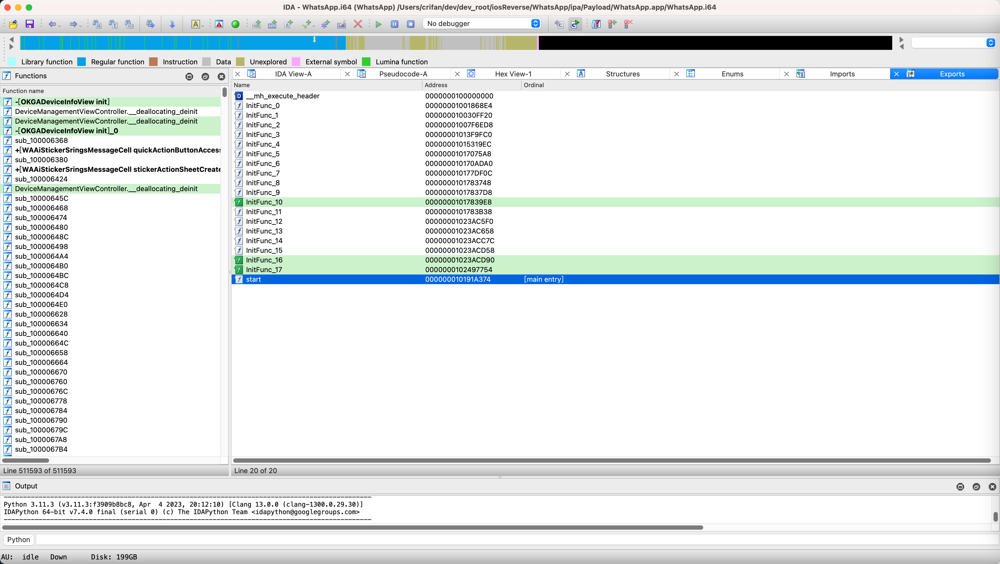
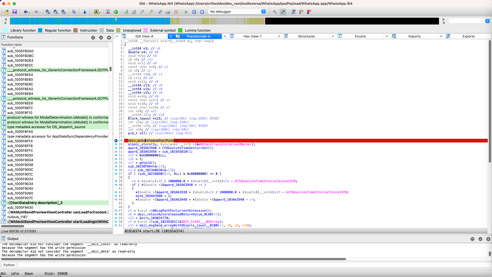
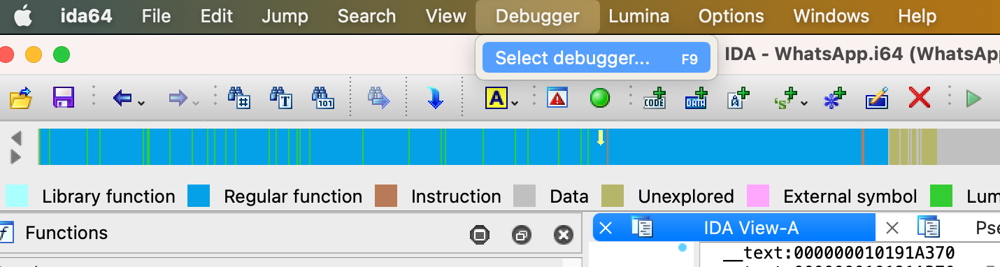
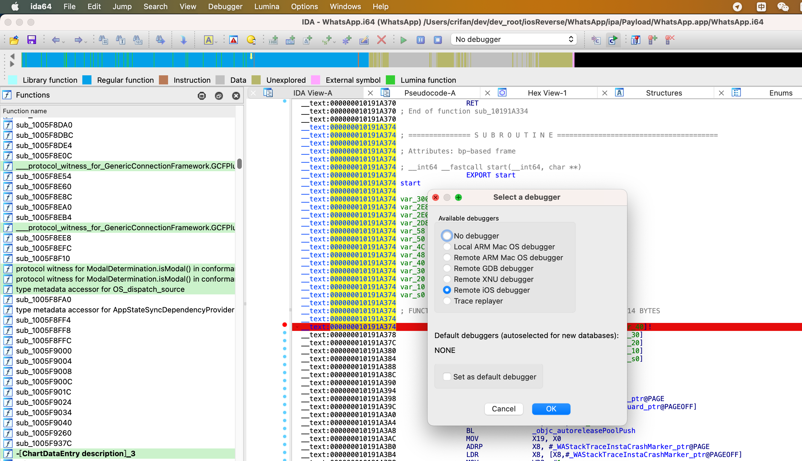
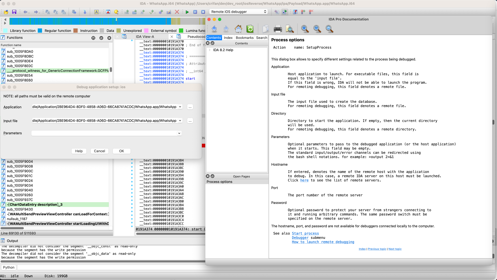
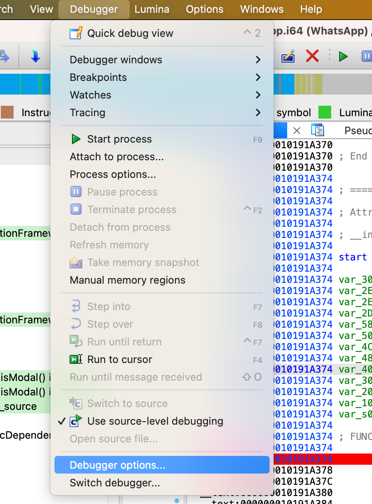

搭建环境
此处IDA中初始化调试iOS的app：WhatsApp的过程是：
获取二进制完整路径
参考：
此处去用CocoaTop/爱思助手等，获取到二进制路径：
- iOS的app：WhatsApp
- 主二进制（在iPhone7中）的完整路径
/var/containers/Bundle/Application/2BE964D4-8DF0-4858-A06D-66CA8741ACDC/WhatsApp.app/WhatsApp
- 主二进制（在iPhone7中）的完整路径
先（给某个函数）加断点
此处选择入口函数：
WhatsApp的入口函数是：start
可以在IDA的Exports中找到：
start 000000010191A374 [main entry]
对应的地址：0x10191A374

双击进入IDA汇编代码，加上断点：

注：
F5伪代码，也是可以加断点的：

设置debugger调试器：Remote iOS Debugger
IDA->Debugger->Select debugger->Remote iOS debugger


设置进程选项
IDA->Debugger->Process options->给：
- Application和Input File都设置为：WhatsApp的二进制完整路径
/var/containers/Bundle/Application/2BE964D4-8DF0-4858-A06D-66CA8741ACDC/WhatsApp.app/WhatsApp


注：
点击Help，可以查看参数含义解释：

设置调试器选项
IDA->Debugger->Debugger options->Set specific options->iOS configuration
Max packet size:512- 注：默认值-1，暂不太清楚具体含义
Timeout：1000Symbol path:/Users/crifan/Library/Developer/Xcode/iOS DeviceSupport/13.3.1 (17D50)/Symbols- 可以从
~/Library/Developer/Xcode/iOS DeviceSupport找到具体的和你的iPhone设备匹配的上述路径
- 可以从
Device：iPhone7_1331 (iPhone 7, iOS 13.3.1)- 默认已识别和选择当前USB连接到Mac的iPhone设备
- （默认已）勾选：
Launch debugserver automatically


启动调试
- 有2种方式启动：
- Spawn模式
IDA->Debugger->Start process
- Attach模式
IDA->Debugger->Attach to process
- Spawn模式

后续即可启动，大概过程是：
RunningImporting Symbols- 此处，此阶段像卡死了
- 最终耗时10分钟才解析符号结束
- 估计是符号表=函数太多，导致的？
- 最终耗时10分钟才解析符号结束
- 此处，此阶段像卡死了
然后就进去了IDA调试主界面：

对应的，电脑+手机的总体效果：


后续即可愉快的调试了。
附录
参考资料
- 网友的
- 官网的
- 新
- Tutorial: Debugging iOS Applications with IDA Pro (hex-rays.com)
- Debugging iOS Applications with IDA Pro
- Debugging DYLD
- Debugging the DYLD Shared Cache
- Debugging System Applications
- Troubleshooting
- 旧
- Tutorial: Debugging iOS Applications with IDA Pro (hex-rays.com)
- 新